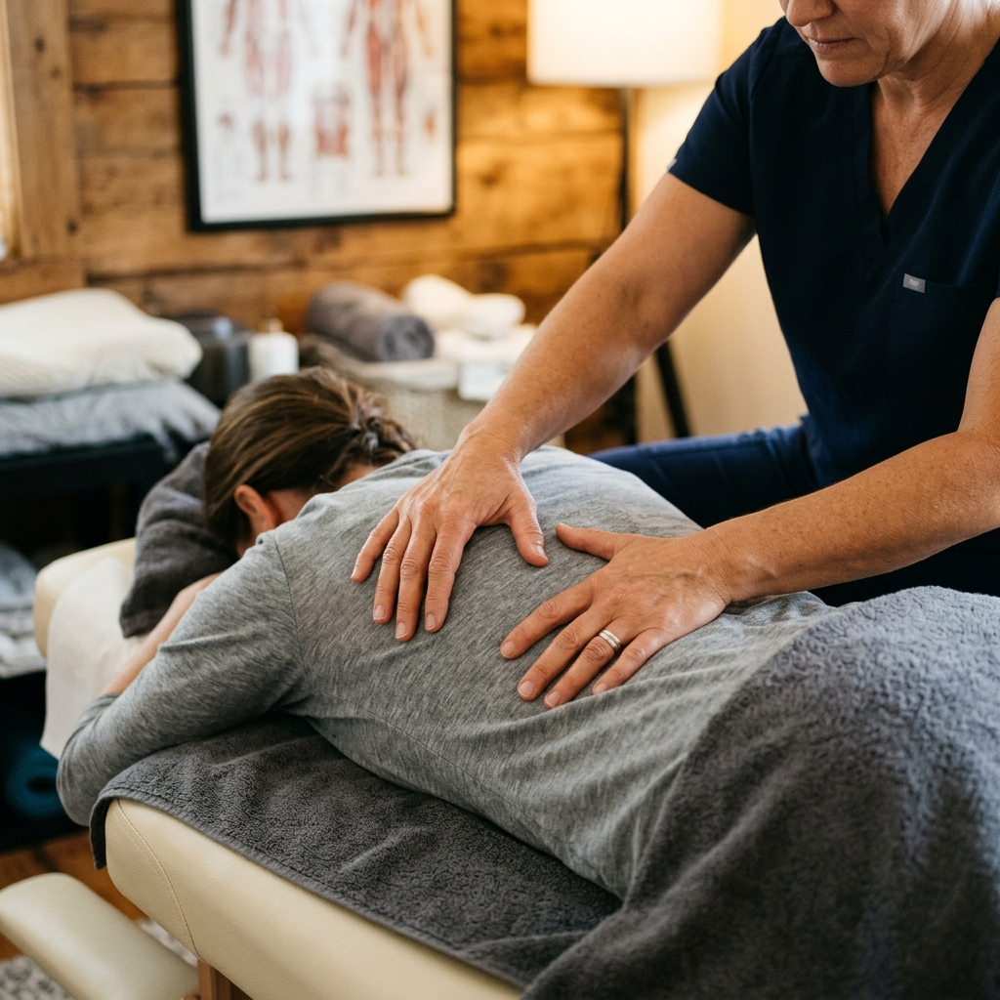

Traseul Tău Complet în 5 Etape HARRA
De la prima evaluare până la recuperarea autonomă – Metoda HARRA urmărește un traseu cronologic și funcțional în care corpul tău devine din ce în ce mai capabil să se autoregleze:

Fundația Internă – Pregătirea Terenului Biologic
Înainte de orice manevră profundă, corpul are nevoie de reducerea stării de stres și echilibrarea sistemului nervos vegetativ pentru a deveni receptiv la terapie.
Descoperă Etapa H
Corecția Structurală – Axele Biomecanice
Readucerea articulațiilor, coloanei și fasciilor pe axele biomecanice corecte. Fără o bază aliniată, orice relaxare musculară este doar temporară.
Descoperă Etapa A
Resetul Neuromuscular – Ștergerea Tiparelor Vechi
Ștergerea tiparelor vechi de durere și compensare din sistemul nervos – efectul direct al tehnicilor reflexe Bowen și al eliberării fasciale profunde.
Descoperă Etapa R¹
Recăpătarea Funcției – Noile Tipare de Mișcare
Integrarea noilor tipare de mișcare: redobândirea mobilității articulare, a elasticității țesuturilor și a capacității de efort fără disconfort.
Descoperă Etapa R²
Corpul Preia Controlul – Recuperare Autonomă
Activarea resurselor proprii ale organismului. Terapia doar deblochează procesul, lăsând corpul capabil să se mențină sănătos pe termen lung, fără dependență permanentă de cabinet.
Descoperă Etapa A